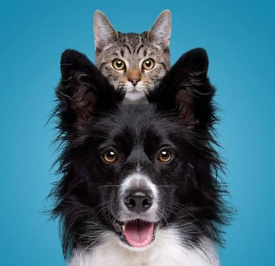

Reimagining Pet Care
For Real Life.
PawGo was founded on a simple realization: our pets are not casual hobbies; they are family members with emotional, physical, and nutritional needs.
Why we unified walks, veterinary clinics, grooming & nutrition.
Traditional pet services are fragmented. You book a walker on one app, buy food from another store, and schedule vet visits on an answering machine.
PawGo connects all dots: your dog walker coordinates with your groomer, and changes in diet are recorded directly for your veterinarian. Every interaction is transparent, logged, and centered around your pet's happiness.

Meet Our Founding Caregivers.
Kabir
Chief Veterinarian 8 years experience • Preventive Diagnostics & Clinical Care"Every pet tells a story through subtle behavioral cues. Our veterinary protocols prioritize preventive health before symptoms escalate."
Ayush
Head of Animal Wellness & Walking 5 years experience • Canine Behavior & Exercise Physiology"Exercise is not just about physical stamina; it's about mental enrichment, sensory stimulation, and building confidence in pets."
Abhinav
Master Stylist & Grooming Director 7 years experience • Coat Aesthetics & Low-Stress Grooming"Grooming should never be stressful. We use desensitization techniques and natural botanical products to ensure a soothing spa session."
Our Core Care Standards
BACKGROUND VETTING
Every single caregiver passes rigorous background checks and animal handling practicals.
CLEAN PERSISTENCE
Your preferences, dietary notes, and emergency instructions are recorded safely and faithfully.
SAFETY FIRST
24/7 on-call veterinary tele-triage available during every single booking session.